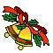

Welcome to our online store. Consider us your complete holiday store. Whether you're a collector or simply looking for a beautiful piece to treasure for years, you'll find it at NPN. Please click on one of the many links to explore all we have to offer.
News Flash!
North Pole Novelties is proud to announce a new line of Lasseter Old Towne Village collectible houses. Start building your collection of these wonderful miniature porcelain houses and shops.
Each model has accessories to enhance the collection. Be sure to order extra trees, fences, street lights and signs to bring activity and a festive atmosphere to your miniature town.
Who Are We?
Located in Seton Grove, Minnesota, North Pole Novelties is one of the oldest and largest holiday stores in the country. The store was founded in 1968 by David Watkins (shown here). Today, David, his family, and over 300 employees manage the daily operation of making the holiday season last all year.
The store itself is the size of two football fields and attracts visitors from around the world. If you can't pay us a visit, order our catalogue. We will deliver to any spot in the United States and overseas. In a rush? We can deliver your order overnight! We also gift wrap.